작성자: 차명주
2026년 6월 1일부터 6월 5일까지 오스트리아 빈에서 진행되었던 ICRA 학회에 논문 포스터 발표자로 참석하였다. 작년에 RA-L에 제출했던 논문이 채택되어 이번 학회에서 발표할 수 있는 기회를 얻어서 참석할 수 있었다.
처음 해외 학회에 참석하는 만큼 설레는 마음 반 걱정되는 마음 반으로 학회에 참석하였다. 다른 나라에서 오는 사람들을 위해서인지는 모르겠지만 첫날에는 학회 등록 이외에는 다른 일정이 있지는 않았다. 따로 학회 일정은 없었지만 다음 날에 학회를 열심히 돌아다닐 수 있도록 학회장 구조를 파악하고자 학회장을 돌아다녔다. 기존에 학회에 참석했던 것과는 다르게 학회장이 매우 넓어서 깜짝 놀랐다.
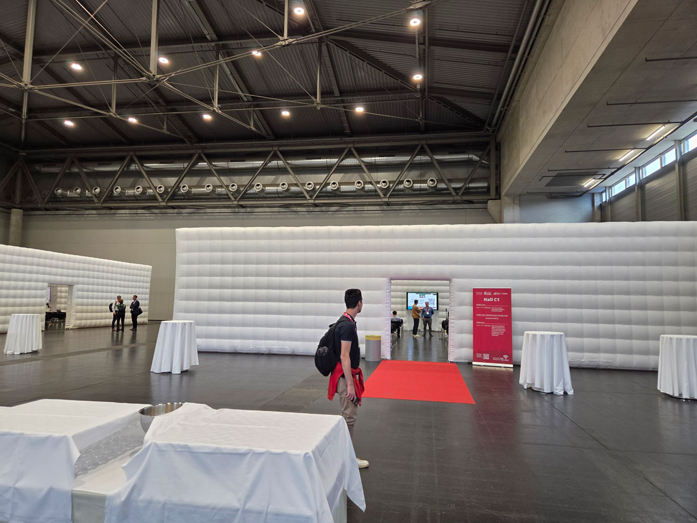
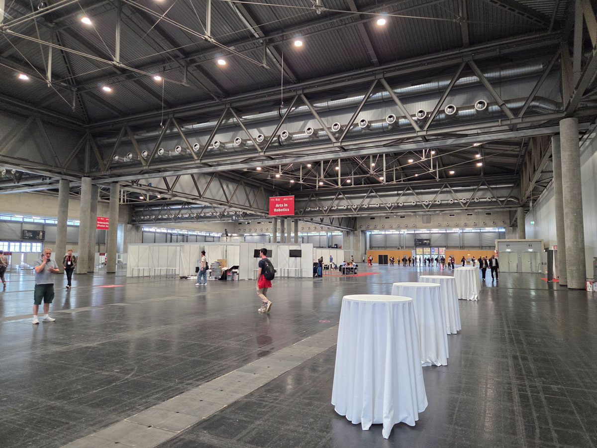
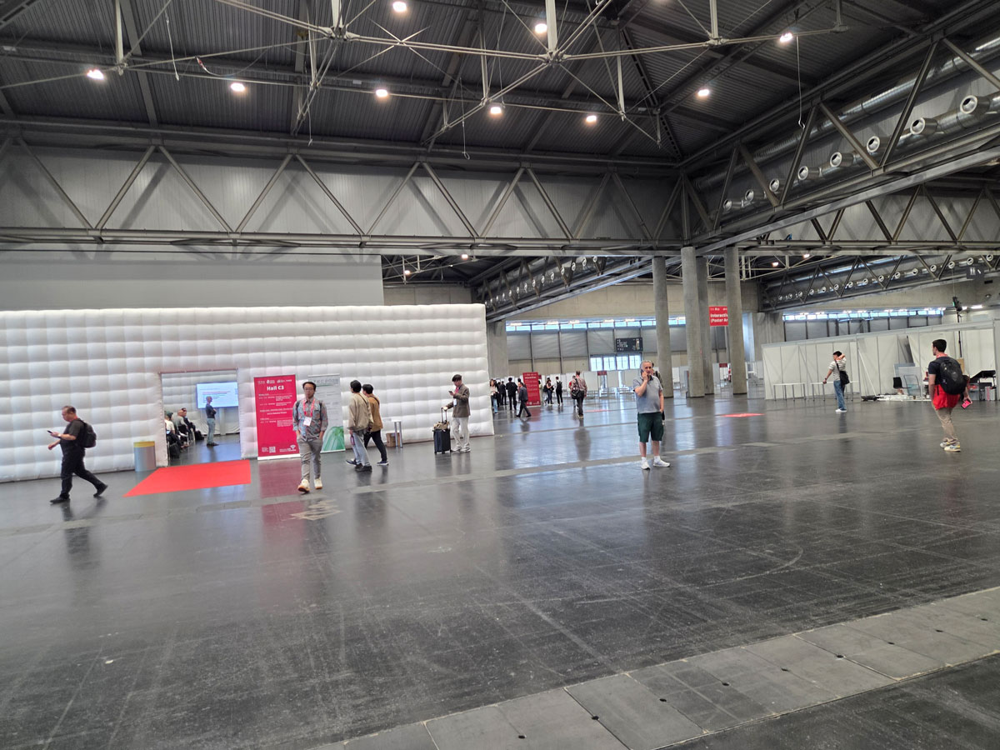
2일차에는 본격적으로 학회가 시작되었다. 유명한 국제학회답게 많은 사람들이 로비에서부터 가득 차 있었고, 해외학회에 참석했다는 게 실감이 났다.
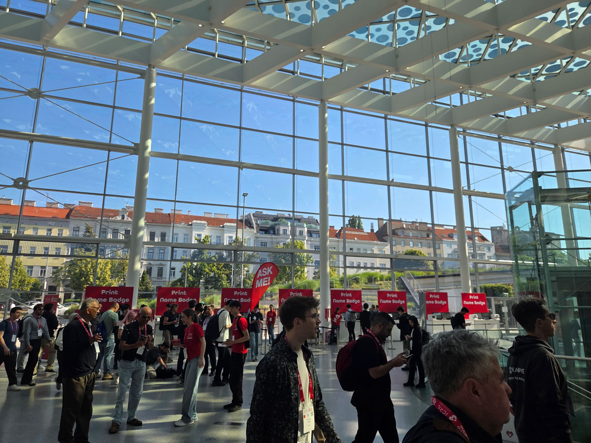
여러 방들이 있었는데, 각 방마다 다른 주제의 세션이 진행되고 있었다. 학회에 참석한 사람들은 각자 관심 있는 세션에 참여하여 발표를 듣고 질문을 하며 연구에 대한 정보를 교류하였다. 나 또한 관심 있는 세션에 참여하여 다양한 연구자들의 발표를 들으며 많은 것을 배울 수 있었다. Oral 발표를 하는 방은 방이 넓다보니 스크린 여러개를 붙여놓고 발표를 하고 있었다.
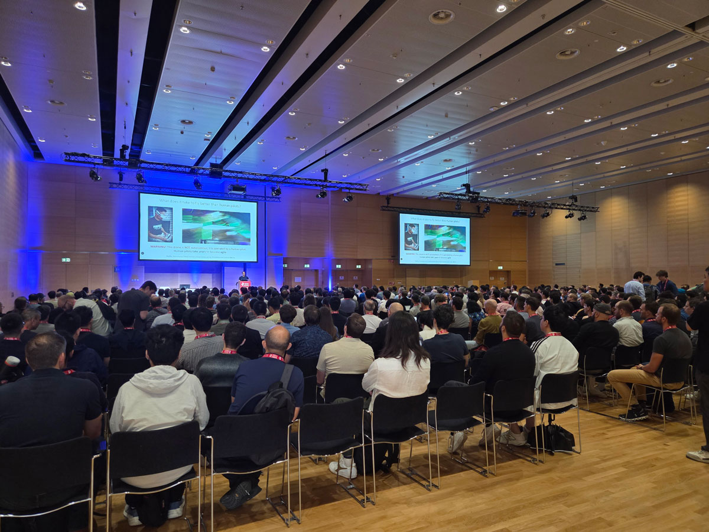
그리고 포스터 발표장에 가보았는데 포스터 발표가 특히나 활발하게 진행되고 있었고 생각보다도 더 많은 포스터가 붙어있어서 놀랐다. 오전 세션만 해도 약 400개의 포스터가 붙어있었고 오후 세션에도 동일하게 포스터가 붙어있었다. 포스터 발표 시간이 1시간 반 밖에 되지 않아서 400개를 다 충분히 곱씹으면서 보기에는 어려웠어서 최대한 내가 관심있어하고 도움이 될만한 것들이 무엇이 있을까 생각하면서 포스터들을 둘러보았다. 총 3일동안 오전 오후 모두 포스터 세션이 하나씩 배정돼있었어서 볼 수 있는 포스터가 상당히 많았다.
포스터 세션에는 상당히 많은 분야들이 섞여있었고 그 덕분에 요즘 어떤 연구들이 많이 진행되고 있는지 파악하는데에 도움이 되었다. 특히 oral 발표보다 포스터 발표에서 더 적극적으로 질문할 수 있는 기회가 많고 포스터 자체가 많아서 다양한 연구자들의 연구를 평소보다 더 많이, 자세히 접할 수 있었고 연구에 대한 아이디어를 얻을 수 있는 기회였다.
또한 내가 현재 하고 있는 연구와 비슷한 맥락의 연구를 하는 연구자들의 포스터도 생각보다 있어서 그 연구자들과 이야기를 나누며 연구에 대한 아이디어를 얻을 수 있었다. 특히 학회를 참석하면서 지금까지는 국내 연구자들과만 교류를 할 수 있는 기회였다면, 이번 학회에서는 해외 연구자들과 직접 소통하면서 교류를 할 수 있는 아주 소중한 기회였다.
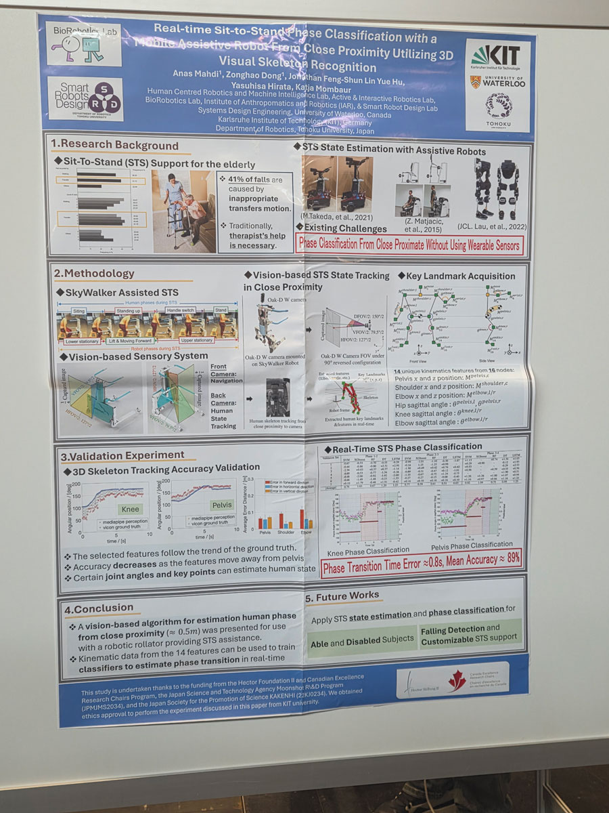
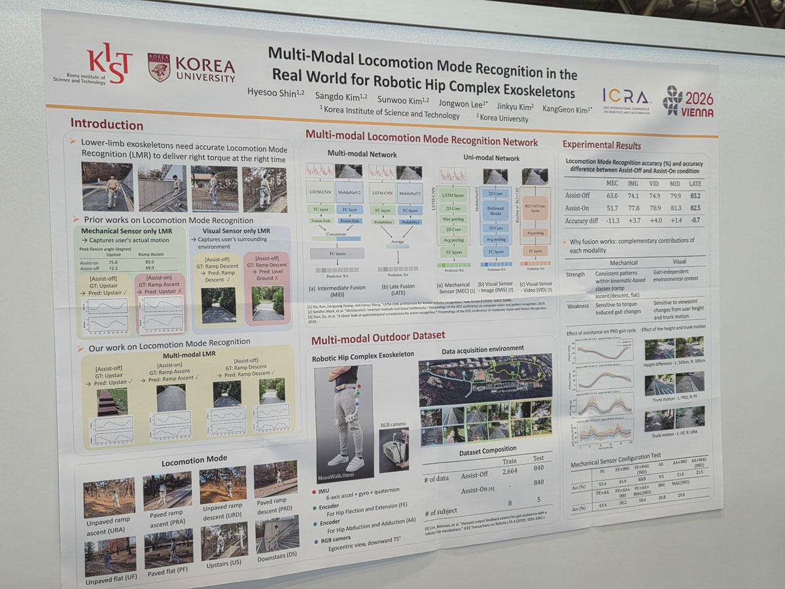
3일차에는 직접 포스터 발표를 함으로서 포스터 세션에 참여하였다.
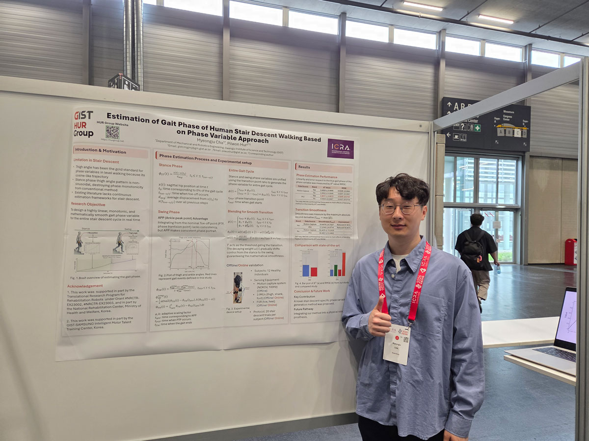
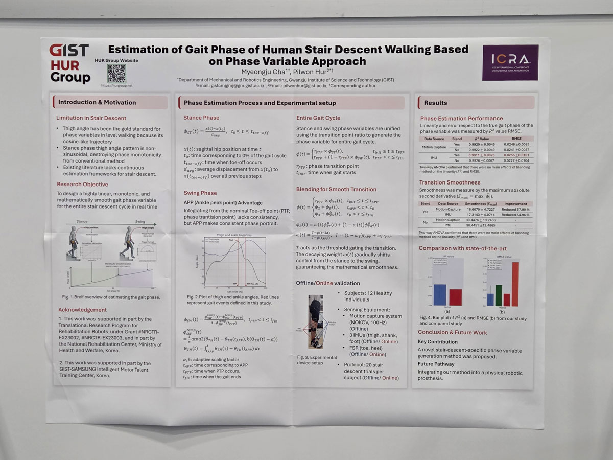
포스터 발표를 보면서 질문을 할때와는 다르게 사람들에게 설명하기 위해서 그 자리에 서 있는 입장이 되어보니 생각보다 조금 더 긴장이 되었다. 사람들이 지나가면서 한 번 훑어보고 가면 잔뜩 긴장하고 질문하기를 기다렸는데, 그냥 지나가는 경우도 있었고 고맙게도 질문을 해주는 연구자들도 있었다. 막상 질문을 받아서 내 연구에 대해서 설명하려고 하니 혼자서 연습했던 영어가 생각보다 잘 나오지 않았다. 평소에 잘 사용하던 영어 용어들이 머릿속에 떠오르지 않고 한국어로만 떠올라서 잠시 버벅대긴 했지만 그래도 연구자들이 잘 이해하고 도와주며 질문을 해주어서 걱정했던 것보다는 훨씬 더 수월하게 발표를 진행할 수 있었다.
포스터 발표를 하면서 질문을 받아보니 내 연구 분야뿐만이 아니라 다른 분야에 대해 연구하는 사람들이 다양한 시각에서 질문을 해주어서 내 연구를 다른 시각에서 바라볼 수 있는 기회가 되었고, 앞으로 연구를 진행하는데 있어서 많은 도움이 될 것 같았다. 또한 포스터 발표를 하면서 내 연구에 대해 설명을 하다보니 내가 지금까지 연구를 진행하면서 놓쳤던 부분이나 부족했던 부분들을 다시 한 번 생각해보고 보완할 수 있는 기회가 되었다.
이렇게 포스터 발표를 무사히 끝마치고 오후에는 학회만의 특별한 행사인 연회가 있었다. 연회는 Imperial night라고 이름이 붙어있었고 Hofburg & Spanishe Hofreitschule (City Center)라는 곳에서 진행되었다. 연회장에 들어서니 상당히 준비를 많이 했다는게 느껴졌고 그 분위기에 압도될만큼 크고 엄청난 분위기었다.
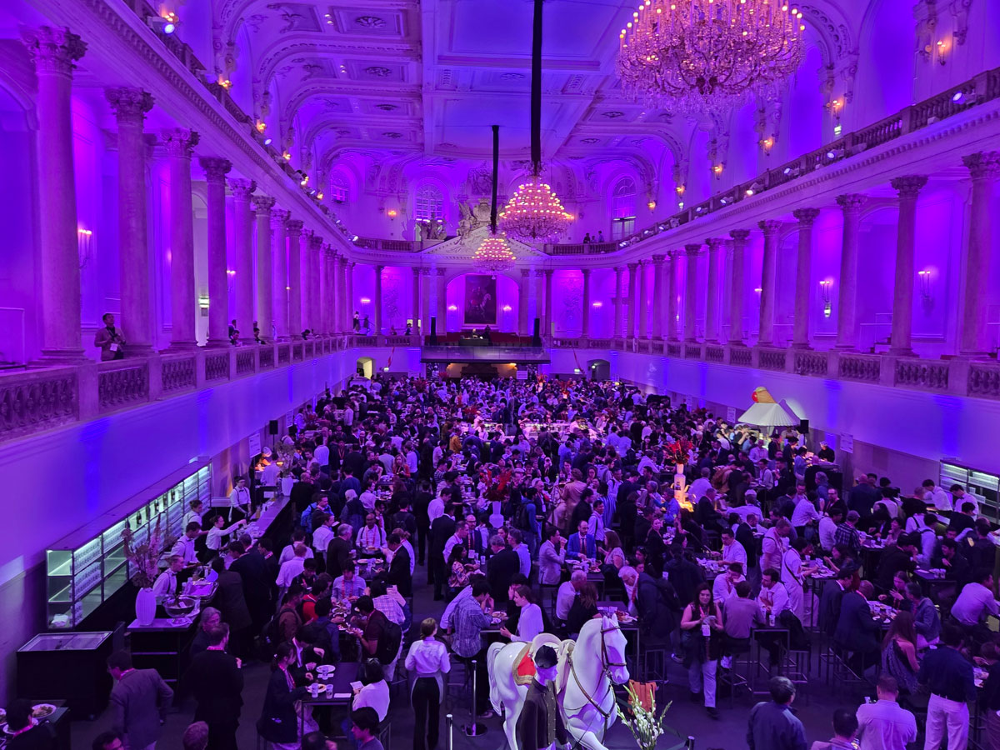
아무래도 혼자 참석하다보니까 같이 다닐 사람이 없어서 조금 움츠러들긴 했지만 이왕 온거 열심히 즐겨야지 하는 생각으로 열심히 구경하고 돌아다녔다. 연회장은 여러 개의 방을 구성하여 방마다 다른 컨셉으로 꾸며져있었다. 첫 번째 방을 지나 들어간 방에서는 오스트리아 전통 춤인지는 모르겠지만 유럽 느낌이 나는 옷을 입고 손뼉을 치고 허벅지에 손바닥을 맞부딪히는 식의 춤을 추는 사람들이 공연을 해주었다. 처음보는 춤이었지만 열심히 춰주시기도 하고 사람들이 같이 호응해주는 모습을 보니 절로 흥이 났다.
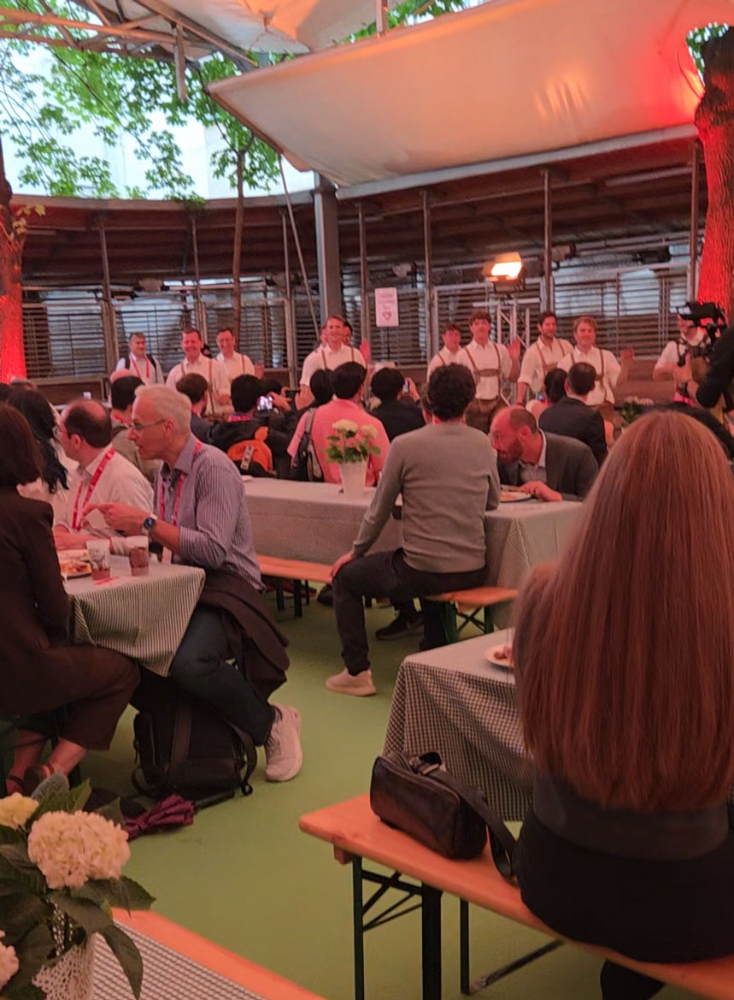
세 번째 방에서는 오스트리아 승마학교를 소개하는 차원에서 말들이 있는 방을 보여주었다. 말들은 모두 흰 말들이었고 평소 보기 힘든 말들을 가까이서 볼 수 있는 좋은 기회였다.
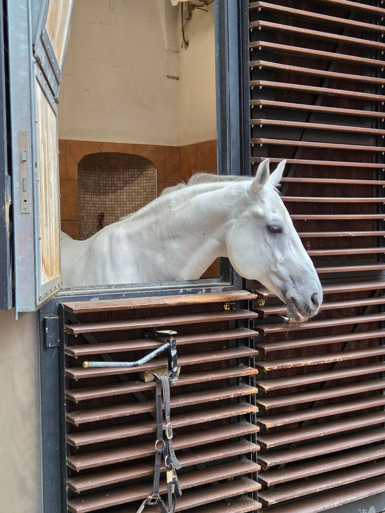
네 번째 방에서는 작은 규모의 오케스트라들이 오케스트라 연주를 하는 모습도 볼 수 있었고 다섯 번째 방에서는 큰 공연장을 연상시키며 무대에서는 두 댄서들이 우아하게 춤을 추는 모습을 볼 수 있었다. 각 방에서는 모두 컨셉에 따라 다른 음식들을 제공해주었고 다양한 음식들을 맛볼 수 있는 기회였다. 연회장에 있는 동안에는 계속해서 다양한 공연들이 이어졌고, 공연을 보면서 맛있는 음식들을 먹으면서 즐거운 시간을 보낼 수 있었다.
전날 만족스럽게 연회를 즐기고도 학회는 계속 이어졌다. 학회에서는 연구에 대한 발표 뿐만이 아니라 다양한 기업들이 부스를 설치하여 자사 제품을 홍보하고 있었다. 학회에 참석한 사람들은 각자 관심 있는 기업 부스를 방문하여 제품에 대한 정보를 얻고, 기업 관계자들과 소통하며 연구와 관련된 정보를 교류하였다. 나 또한 관심 있는 기업 부스를 방문하여 다양한 제품과 기술에 대한 정보를 얻을 수 있었다. 로봇학회라서 로봇만 있을 것이라고 생각했었는데, 물론 대부분이 로봇에 대한 부스였으나, 모션캡쳐 카메라, 엔코더 등 로봇을 제어하거나 만드는데 필요한 다양한 부속품들이나 연구하는데 필요한 주변 장치들을 홍보하는 부스들도 있었다. 부스들은 대부분이 로봇 팔과 휴머노이드였으며 그 수준들이 상당히 흥미로울 정도로 잘 만들어져 있었다.
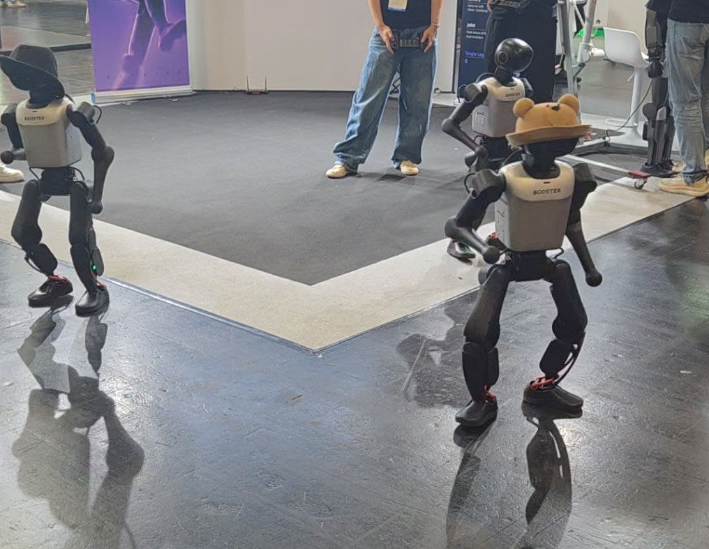
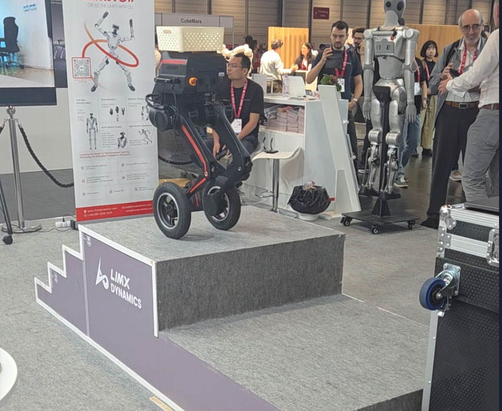
이렇게 다양한 컨텐츠들을 접하면서 학회에 참석한 사람들은 연구에 대한 정보뿐만이 아니라 다양한 기술과 제품에 대한 정보를 얻을 수 있었고, 앞으로 연구를 진행하는데 있어서 많은 도움이 될 것 같았다. 기회가 된다면 다음에도 참석해서 다양한 것들을 접하고 다양한 연구자들과 교류하고 싶다는 생각이 들었다. 그러기 위해서 앞으로도 열심히 연구해서 좋은 연구결과를 내고 논문도 작성하며 학회에 참석할 수 있는 기회를 얻도록 해야겠다는 생각이 들었다.
참가자 명단: 허필원, 차명주